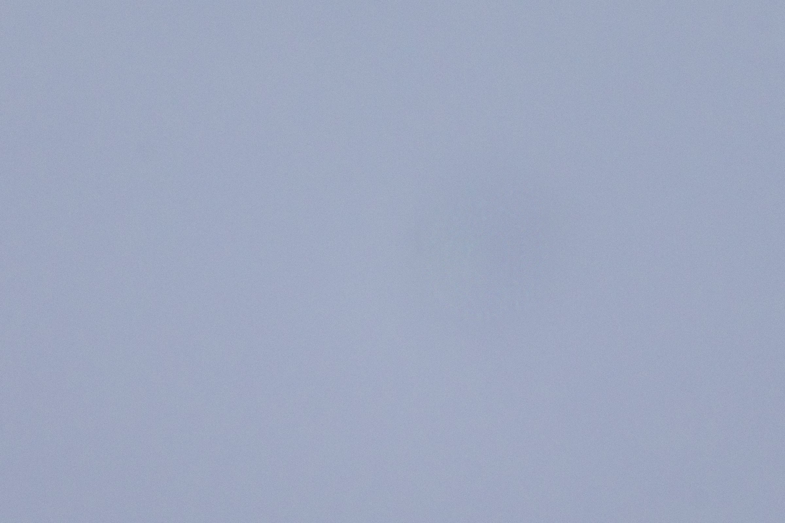
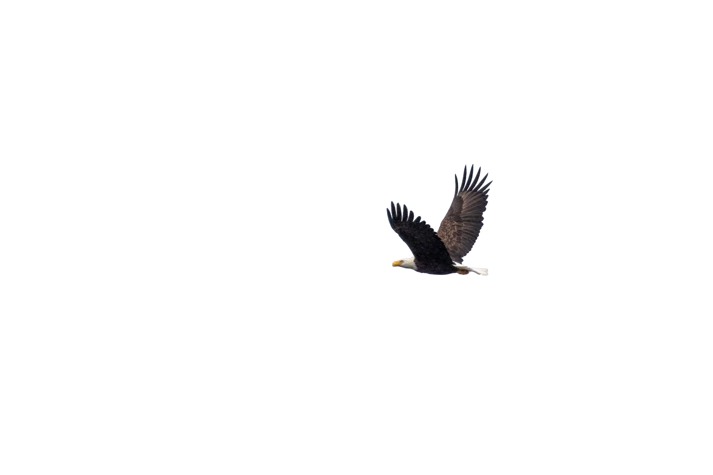

Wildlife, landscapes and the streets of Durham, shot on long glass and edited in Darktable. Follow along at @car_sore.
Every photo here keeps its camera settings. Point at a bar to see that slice in the other three charts; select it to see the photos.
I'm Carson, a Technical Support Engineer in Durham, North Carolina, who spends free mornings out with a camera. What started as photographing my own neighborhood turned into trips to the Olympic Peninsula, Boston and Chattanooga, plenty of slow walks through downtown Durham, and an ever-growing Darktable library.
Questions about a photo, interested in a print, or want to shoot together? Send me an email or a DM.